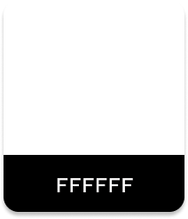
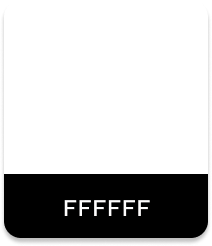

Mod Muse
UX/UI Case Study | Native App - iOS

The Process
-
Define
I independently conceived Mod Muse, defining its core purpose as a vintage fashion app promoting reuse and a unique aesthetic, setting the project's foundational vision and scope.
-
Research
Through user interviews, surveys, and competitive analysis, I gained understanding of users fashion habits, preferences for vintage clothing, and pain points in sustainable shopping, which directly informed user needs and app features.
-
Design
I translated insights into intuitive solutions through information architecture, wireframing, and interactive prototyping, culminating in a cohesive visual design for Mod Muse's engaging user interface.
-
Test
Through subsequent usability testing, I evaluated the design's effectiveness, identifying areas for iteration and ensuring the app provides a seamless and engaging experience for vintage fashion enthusiasts.
The Objective
Mod Muse is a vintage fashion app inspired by the 1960s mod aesthetic. It allows anyone to buy and sell vintage pieces. The app aims to provide a seamless and visually engaging user experience while promoting sustainability through secondhand fashion.
Who
Fashion enthusiasts and eco-conscious individuals who appreciate the timeless appeal of vintage clothing and want to buy or sell unique pieces.
What
A vintage fashion app inspired by the 1960s mod aesthetic, providing a platform to buy, sell, and discover curated vintage pieces.
When
It's perfect for anyone looking to embrace vintage fashion in their everyday wardrobe or declutter sustainably at any time. Times like "spring cleaning" will be optimal for selling.
Where
Users will utilize the app primarily at home, but it can be used at any time. It's ideal when a user is shopping in person and can't find what they need.
Why
Due to its curated selection of vintage pieces, its intuitive and visually engaging design inspired by mod aesthetics, and its seamless platform for buying and selling.

Userflows
Wireframes
From Low Fidelity
Mockups
To High Fidelity Prototypes
(Scroll to view more)


Style Guide
COLORS


 


LOGO
The logo must:
- Be in all caps
- Have a 1 stroke in the color #FFFFFF
- Have an inner shadow
- Remain the color #0074D9
HEADINGS
Montserrat Bold or SemiBold
BODY
Montserrat Regular
Conclusion
Working on Mod Muse was an insightful journey that deepened my understanding of user-centered design and the importance of balancing aesthetics with functionality. Through extensive research and iteration, I learned how nostalgia-driven design can create an emotional connection with users while still maintaining modern usability standards.
This project reinforced the significance of seamless navigation, intuitive interactions, and engaging visuals. I also gained valuable experience in brand identity development, ensuring that every design choice—from typography to color schemes—aligned with the mod aesthetic and enhanced the overall experience. The impact of Mod Muse lies in its ability to provide a curated, enjoyable shopping experience tailored to lovers of vintage fashion. By prioritizing accessibility, personalization, and a visually immersive interface, the app successfully bridges the gap between past and present.
Moving forward, I’d love to explore more personalization features, enhanced search capabilities, and community-driven elements to make Mod Muse even more engaging. This project not only strengthened my UI/UX skills but also reaffirmed my passion for designing experiences that are both beautiful and functional.